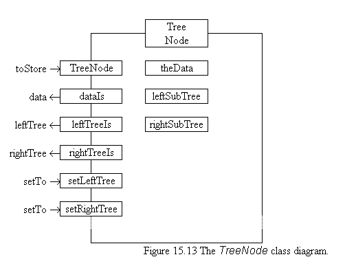
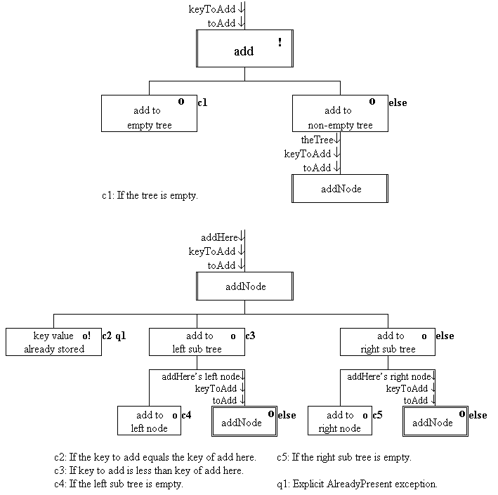

15.8
The BinaryTree obtain(), isPresent()
and toString() actions.
15.8
The BinaryTree obtain(), isPresent()
and toString() actions.
The class diagram of the BinaryTree class does not
differ significantly from that of the LinkedList class
given in Figure 15.3. The encapsulated node class is known as the
TreeNode class and the Enumeration class as the BinaryTreeEnumeration.
The class diagram for the TreeNode class differs from that
of the ListNode class by having enquiry and attribute
changing actions for each of the links. Its class diagram is
given in Figure 15.13.

The class diagram is incomplete, shown by the dotted lines,
for reasons which will be explained below. The implementation of
this design is as follows.
0255 /////////////////////////////////////////////////////////
0256 // Private TreeNode class, providing the nodes which //
0257 // are linked together to implement the BinaryTree. //
0258 /////////////////////////////////////////////////////////
0259
0260
0261 class TreeNode {
0262
0263 Keyable theData;
0264 TreeNode leftSubTree;
0265 TreeNode rightSubTree;
0266
0267 protected TreeNode( Keyable toStore){
0268 theData = toStore.copy();
0269 leftSubTree = null;
0270 rightSubTree = null;
0271 } // End TreeNode constructor.
0272
0273 protected Keyable dataIs(){
0274 return theData.copy();
0275 } // End dataIs.
0276
0277 protected TreeNode leftTreeIs(){
0278 return leftSubTree;
0279 } // End leftTreeIs.
0280
0282 protected TreeNode rightTreeIs(){
0283 return rightSubTree;
0284 } // End rightTreeIs.
0285
0286 protected void setLeftTree( TreeNode setTo) {
0287 leftSubTree = setTo;
0288 } // End setLeftTree.
0289
0290 protected void setRightTree( TreeNode setTo) {
0291 rightSubTree = setTo;
0292 } // End setRightTree.
0293
0302 } // End class TreeNode.
The encapsulated leftSubTree and rightSubTree
attributes of this class are themselves instances of the class
being declared and so are recursively contained within it. The
constructor actions are comparable with the actions of the ListNode
class above, with the exception that a new node can only be
constructed with empty (null) sub trees. The design of the
add() action is as follows.

The add() action itself is concerned with dealing with
the special case of adding to an empty tree, in all other cases
it calls the private action addNode(). This action
will decide, using the key of the element to be added and the key
of the current node, if it is to add the element to the left sub
tree or to the right sub tree. Assuming it is to be added to the
left sub-tree, if this tree is empty a new node will be
constructed and added to it. Otherwise it calls the addNode
action passing as the addHere argument the left node. A
similar pattern of actions happens if the new element is to be
added to the right tree. The implementation of this design is as
follows.
0033 public void add( Keyable toAdd) {
0035 if ( theTree == null) {
0036 theTree = new TreeNode( toAdd);
0037 numberOfElements++;
0038 } else {
0039 addNode( theTree, toAdd.keyToAdd(), toAdd);
0040 } // End if.
0041 } // End add.
0042
0043
0044 private void addNode( TreeNode addHere,
0045 Orderable keyToAdd,
0046 Keyable toAdd) {
0047
0048 if ( keyToAdd.keyIsEqualTo(
0049 addHere.dataIs().keyValueIs())) {
0050 throw new AlreadyPresentException();
0051 } else if ( keyToAdd.keyIsLessThan(
0052 addHere.dataIs().keyValueIs())) {
0053 if ( addHere.leftTreeIs() == null) {
0054 addHere.setLeftTree( new TreeNode( toAdd));
0055 numberOfElements++;
0056 } else {
0057 addNode( addHere.leftTreeIs(), keyToAdd, toAdd);
0058 } // End if.
0059 } else {
0060 if ( addHere.rightTreeIs() == null) {
0061 addHere.setRightTree( new TreeNode( toAdd));
0062 numberOfElements++;
0063 } else {
0064 addNode( addHere.rightTreeIs(),keyToAdd, toAdd);
0065 } // End if.
0066 } // End if.
0067 } // End addNode.
This implementation should become clearer if a trace of an
addition is considered. Assuming that a tree is in the state
shown in the fifth diagram of Figure 15.12, the addition of the dull
element will proceed as follows.
As theTree is not empty the test in add() on
line 0035 will be false and the addNode() action
will be called passing theList as the addHere
argument. Within addNode the test on line 0048 will be false
and that on line 0051 true, as the key of the element
being added, dull, is alphabetically lower than the
element stored at the root, geek. The test on line 0053
will be false as the left sub tree of the geek node
is not empty. So the action on line 0057 will be executed,
recursively calling addNode and passing geek's left
subtree as the addHere argument. This is a recursive call
of addNode, as the call is made within the execution of addNode,
and for this reason is shown in a double bounded box in the
design.
On this second call addHere refers to the boring
node and the condition on line 0048 will again be false
and that on line 0051, effectively dull < boring,
will be false. The condition on line 0060 will be true
as the right hand sub tree of the boring node is empty.
Execution of line 0061 will create a new node, linked to the
right of the boring node, containing the name dull
and with two empty sub trees and subsequently increment the numberOfElements
attribute. This is the state shown in the last diagram in Figure
15.12 as expected.
At this point execution of the second call of addNode()
will terminate and flow of control will return to the point in
the first call of addNode() where the second call was
recursively invoked. This was line 0057 and the next step in this
call is to terminate, returning flow of control to the add()
action on line 0039 which also terminates. This recursive descent
and ascent of flow of control is an important consideration in
the actions which follow.
The complexity of this implementation of the BinaryTree add()
action should be compared with that of the LinkedList add()
action. Allowing for the consideration that recursive control
structures are cognitively more complex than sequence, selection
and iteration, it should be clear that this action is much
simpler.
 15.8
The BinaryTree obtain(), isPresent()
and toString() actions.
15.8
The BinaryTree obtain(), isPresent()
and toString() actions.